콘크리트기사 (2018-03-04 기출문제)
1과목: 재료 및 배합
1. 시멘트 클링커의 조성광물에 대한 설명으로 틀린 것은?
- 알라이트(C3S)의 양이 많을수록 조강성을 나타낸다.
- 알루미네이트(C3A)는 수화열이 적고 장기강도가 크다.
- 알라이트(C3s) 및 벨라이트(C2S)는 시멘트 강도의 대부분을 지배한다.
- 페라이트(C4AF)는 수화열이 적고 건조수축도 적으며 강도도 작지만 화학저항성이 양호하다.
(정답률: 72%)

2. 시멘트의 품질에 영향을 미치는 요인들에 대한 설명으로 옳은 것은?
- 시멘트의 저장기간이 길어지면 대기 중의 수분과 탄산가스를 흡수하게 되어 비중과 강열감량이 증가하게 된다.
- 시멘트의 분말도가 크면 비표면적이 증가하여 풍화하기 어렵고 수화열이 크므로 초기강도발현이 크게 나타난다.
- 시멘트 제조 시 클링커의 소성이 불충분하면 시멘트의 비중이 감소하고 안정성과 장기강도가 작아지므로 충분한 소성이 필요하다.
- 시멘트 화학성분 중 MgO 성분은 시멘트 경화체의 이상팽창을 일으킬 수 있으므로 시멘트 제조 시 10% 이하가 되도록 규제하고 있다.
(정답률: 55%)
3. 다음 중 콘크리트용 화학 혼화제 시험 방법에 대한 설명으로 틀린 것은?
- 기준 콘크리트의 공기량은 2% 이하로 한다.
- 감수제를 사용한 콘크리트의 공기량은 3~6% 범위로 한다.
- 콘크리트를 제조할 때 화학 혼화제는 미리 혼합수에 혼입하여 믹서에 투입한다.
- 단위 시멘트량은 슬럼프가 80mm인 콘크리트에서 300kg/m3로 한다.
(정답률: 36%)
4. 시멘트시험과 관련된 장비의 연결이 잘못된 것은?
- 비중시험-르샤틀리에 플라스크
- 분말도시험-블레인 투과장치 세트
- 응결시간 측정-비카장치
- 오토클레이브 팽창시험-워싱턴 에어미터
(정답률: 74%)
5. 콘크리트 배합설계에서 배합강도(fcr)를 결정하는 방법에 대한 설명으로 틀린 것은?
- 구조물에 사용된 콘크리트의 압축강도가 설계기준압축강도보다 작아지지 않도록 현장 콘크리트의 품질변동을 고려하여 콘크리트의 배합강도를 설계기준압축강도보다 충분히 크게 정하여야 한다.
- 압축강도의 표준편차(s)를 알고 fck＞35MPa인 경우 fcr=fck+1.34s(MPa), fcr=0.9fck+2.33s (MPa) 두 식으로 구한 값 중 큰 값으로 정하여야 한다.
- 압축강도의 시험횟수가 15회 이상 29회 이하인 경우는 실제 시험 결과로부터 계산한 표준편차(s)에 보정계수를 곱한 값을 표준편차로 사용할 수 있다.
- 압축강도 시험기록이 없고 설계기준 압축강도(fck)가 21MPa 미만인 경우에는 콘크리트의 배합강도는 1:1fck+10(MPa)으로 정할 수 있다.
(정답률: 73%)
6. 콘크리트에 사용하는 혼합수로서 상수돗물이외의 물에 대한 품질항목 중 용해성 증발 잔류물의 양은 몇 g/L 이하이어야 하는가?
- 1 g/L
- 2 g/L
- 3 g/L
- 4 g/L
(정답률: 66%)
7. 굵은 골재의 단위용적질량 시험에서 용기의 부피가 10L, 용기 중 시료의 절대 건조질량이 20kg 이었다. 이 골재의 흡수율이 1.2%이고 표면건조포화상태의 밀도가 2.65g/cm3라면 실적률은 얼마인가?
- 45.2%
- 54.7%
- 65.3%
- 76.4%
(정답률: 36%)
8. 콘크리트의 배합에서 잔골재율에 대한 설명으로 틀린 것은?
- 소요의 워커빌리티를 얻을 수 있는 범위 내에서 단위수량이 최소가 되도록 시험에 의해 정하여야 한다.
- 공사 중에 잔골재의 입도가 변하여 조립률이 ±0.20 이상 차이가 있을 경우에는 배합을 수정할 필요가 있다.
- 유동화 콘크리트의 경우, 유동화 후 콘크리트의 워커빌리티를 고려하여 잔골재율을 결정할 필요가 있다.
- 고성능 공기연행감수제를 사용한 콘크리트의 경우로서 물-결합재비 및 슬럼프가 같으면, 일반적인 공기연행감수제를 사용한 콘크리트와 비교하여 잔골재율을 1~2% 정도 작게 하는 것이 좋다.
(정답률: 62%)
9. 전체 10kg의 굵은 골재를 사용한 체가름시험결과가 아래의 표와 같을 때 조립률은?
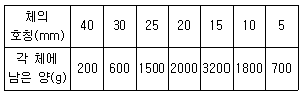
- 4.7
- 6.24
- 7.38
- 8.46
(정답률: 62%)
10. 아래 표와 같은 조건에서 설계기준 압축강도가 28MPa인 콘크리트의 배합강도를 구하면?
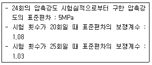
- 34.97MPa
- 36.15MPa
- 36.62MPa
- 37.32MPa
(정답률: 50%)
11. 콘크리트의 배합에서 물-결합재비에 대한 설명으로 틀린 것은?
- 물-결합재비는 소요의 강도, 내구성, 수밀성 및 균열저항성 등을 고려하여 정하여야 한다.
- 제빙화학제가 사용되는 콘크리트의 물-결합재비는 45% 이하로 한다.
- 콘크리트의 수밀성을 기준으로 물-결합재비를 정할 경우 그 값의 50%이하로 한다.
- 콘크리트의 탄산화 저항성을 고려하여 물-결합재비를 정할 경우 그 값은 45% 이하로 한다.
(정답률: 71%)
12. 시멘트는 풍화가 되면 성질이 변하게 된다. 시멘트 풍화로 인하여 나타나는 현상에 대한 설명으로 틀린 것은?
- 풍화되면 비중이 커진다.
- 풍화되면 강열감량이 증가된다.
- 풍화되면 응결시간이 지연된다
- 풍화되면 강도의 발현이 저하된다.
(정답률: 75%)
13. 콘크리트에 이용되는 혼화재에 대한 설명으로 틀린 것은?
- 팽창시는 에트린가이트 및 수산화칼슘 등의 생성에 의해 콘크리트를 팽창시킨다.
- 플라이애시는 유리질 입자의 잠재수경성에 의해 콘크리트의 초기강도를 증가시킨다.
- 실리카 퓸을 사용한 콘크리트는 마이크로필러 효과와 포졸란 반응에 의해 콘크리트의 강도가 증가한다.
- 고로슬래그 미분말을 사용한 콘크리트의 초기강도는 포틀랜드시멘트 콘크리트보다 클수록 현저하게 나타난다.
(정답률: 58%)
14. 골재의 절대부피가 0.65m3인 콘크리트에서 잔골재율이 42%이고 잔골재의 표건밀도가 2.60g/cm3이면 단위 잔골재량은?
- 709.8kg
- 712.6kg
- 711.4kg
- 707.6kg
(정답률: 48%)
15. 콘크리트용 화학혼화제의 작용과 효과에 관한 다음 설명 중 틀린 것은?
- AF제는 미세한 기포를 다수 연행하여 콘크리트의 워커빌리티를 개선하는 효과가 있다.
- 감수제는 시멘트 입자를 정전기적인 반발작용으로 분산시켜 콘크리트의 단위수량을 감소시키는 효과가 있다.
- 고성능 AE감수제는 시멘트의 분산작용을 분명하게 하여 콘크리트의 응결을 빠르게 하는 효과가 있다.
- AE감수제는 시멘트 분산작용 이외에 공기연행작용을 함께 가지고 있어 콘크리트의 동결융해 저항성을 높여 주는 효과가 있다.
(정답률: 59%)
16. 일반 콘크리트용 천연 잔골재의 성질에 대한 설명으로 틀린 것은?
- 잔골재의 절대건조 밀도는 2.5g/cm3 이상의 값을 표준으로 한다.
- 잔골재의 흡수율은 3.0% 이하의 값을 표준으로 한다.
- 콘크리트용 잔골재는 깨끗하고 강하며 내구적이고, 알맞은 입도를 가져야 한다.
- 황산나트륨에 의한 안정성 시험을 한 경우, 조작을 5번 반복했을 때 잔골재의 손실질량은 12% 이하를 표준으로 한다.
(정답률: 71%)
17. 시멘트의 비중시험에 대한 설명으로 틀린 것은?
- 달리 규정한 바가 없다면, 시멘트의 비중은 강열 감량 후의 시료에 대해서 실시하여야 한다.
- 온도 23±2℃에서 비중 약 0.73 이상인 완전히 탈수된 등유나 나프타를 사용한다.
- 광유가 든 비중병에 시멘트를 넣고 비중병을 물중탕 안에 넣어 광유 온도차가 0.2℃ 이내로 되었을 때의 눈금을 읽는다.
- 동일 시험자가 동일 재료에 대하여 2회 측정한 결과가 ±0.03 이내이어야 한다.
(정답률: 52%)
18. 골재의 체가름시험에 관한 설명으로 틀린 것은?
- 모래나 자갈을 4분법 또는 시료분취기를 통해 대표시료를 채취한다.
- 채취한 시료는 1⑤±5℃ㅇ서 시료의 무게변화가 없을 때까지 건조시킨다.
- 굵은 골재의 최대치수가 25mm 정도인 시료의 최소 건조질량은 3kg으로 한다.
- 1.2mm체에 질량비로 5% 이상 남는 잔골재 시료의 최소 건조질량은 500g으로 한다.
(정답률: 57%)
19. 콘크리트 압축강도 시험결과가 다음과 같을 경우 표준편차는 얼마인가? (단, 불편분산의 개념에 의해 구하시오.)
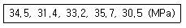
- 2.14MPa
- 2.92MPa
- 3.14MPa
- 3.92MPa
(정답률: 38%)
20. 콘크리트용 굵은 골재의 최대치수에 대한 설명으로 틀린 것은?
- 거푸집 양 측면 사이의 최소 거리의 1/5을 초과하지 않아야 한다.
- 슬래브 두께의 1/4을 초과하지 않아야 한다.
- 개별철근, 다발철근, 긴장재 또는 덕트 사이 최소 순간격의 3/4을 초과하지 않아야 한다.
- 구조물의 단면이 큰 경우 굵은 골재의 최대치수는 40mm을 표준으로 한다.
(정답률: 66%)
2과목: 제조, 시험 및 품질관리
21. 콘크리트의 동결융해 시험에서 300싸이클에서 상대 동탄성계수가 76%라면, 이 공시체의 내구성 지수는?
- 76%
- 81%
- 85%
- 91%
(정답률: 67%)
22. 콘크리트의 충격강도는 말뚝의 항타, 충격하중을 받는 기계기초, 폭발하중을 받는 방호구조 등과 같은 경우에 매우 중요하다. 다음 중 충격강도에 대한 일반적인 설명으로 틀린 것은?
- 콘크리트의 충격강도는 압축강도보다는 인장강도와 더 밀접한 관계가 있다.
- 탄성계수와 포아송비가 큰 골재를 사용한 경우 충격강도에 유리하다.
- 동일한 압축강도의 콘크리트일지라도 부순골재처럼 골재 표면이 거칠수록 충격강도에 유리하다.
- 굵은 골재 최대치수가 작은 경우 충격강도에 유리하다.
(정답률: 34%)
23. 콘크리트용 재료를 계량하고자 한다. 고로슬래그 미분말 50kg을 목표로 계량한 결과 50.6kg이 계량되었다면, 계량오차에 대한 올바른 판정은? (단, 콘크리트표준시방서의 규정을 따른다.)
- 계량오차가 1.2%로 혼화재의 허용오차 2%내에 들어 합격
- 계량오차가 1.2%로 혼화재의 허용오차 3%내에 들어 합격
- 계량오차가 1.2%로 고로슬래그 미분말의 허용오차 1%를 벗어나 불합격
- 계량오차가 1.2%로 고로슬래그 미분말의 허용오차 3%내에 들어 합격
(정답률: 57%)
24. 일반 콘크리트의 비비기에 대한 설명으로 틀린 것은?
- 재료를 믹서에 투입하는 순서는 믹서의 형식, 비비기 시간, 골재의 종류 및 입도, 단위수량, 단위시멘트량, 혼화 재료의 종류 등에 따라 다르다.
- 강제혼합식 믹서 중 바닥의 배출구를 완전히 폐쇄시킬 수 없는 경우에는 물을 다른 재료보다 일찍 주입하여야 한다.
- 비비기 시간에 대한 시험을 실시하지 않은 경우 그 최소 시간은 가경식 믹서일 때에는 1분 30초 이상을 표준으로 한다.
- 비비기는 미리 정해둔 비비기 시간의 3배 이상 계속하지 않아야 한다.
(정답률: 63%)
25. 콘크리트의 공기량을 감소시키는 요인으로 적합하지 않는 것은?
- 콘크리트의 온도 상승
- 잔골재 중의 0.15~0.60mm 입자 증가
- 잔골재율 감소
- 플라이 애시 사용
(정답률: 38%)
26. 콘크리트의 탄성계수는 압축강도와 일정한 상관관계가 있는 것으로 알려져 있다. 콘크리트의 압축강도가 27MPa일 때 탄성계수는? (단, 보통중량골재를 사용한 콘크리트)
- 2.14×104MPa
- 2.27×104MPa
- 2.54×104MPa
- 2.67×104MPa
(정답률: 31%)
27. 3등분점 재하로 휨강도 시험을 실시하였을 때 파괴하중이 30.8kN이었고 지간의 중앙의 1/3내에서 파괴되었다면 휨강도는 얼마인가? (단, 공시체의 크기는 150×150×530mm이며, 지간은 450mm이다.)
- 3.5MPa
- 3.8MPa
- 4.1MPa
- 4.4MPa
(정답률: 46%)
28. 콘크리트의 압축강도 시험용 공시체 규격 및 시험방법에 대한 설명으로 틀린 것은?
- 공시체는 지름의 2배의 높이를 가진 원기둥형으로 하고 그 지름은 굵은 골재 최대 치수의 3배 이상, 100mm 이상으로 한다.
- 콘크리트를 몰드에 채울 때 2층 이상으로 거의 동일한 두께로 나누어서 채우며 각 층의 두께는 160mm를 초과해서는 안된다.
- 다짐봉을 사용하여 콘크리트를 다져 넣을 때 각 층은 적어도 2000mm2 에 1회의 비율로 다지도록 하고 다짐봉이 바로 아래층까지 닿도록 한다.
- 하중을 가하는 속도는 압축응력도의 증가율이 매초 (0.6±0.4)MPa이 되도록 하고 공시체가 파괴될 때까지 시험기가 나타내는 최대하중을 유효숫자 3자리까지 읽는다.
(정답률: 59%)
29. 굳지 않은 콘크리트의 시료채취방법(KS F 2401)에서 시료의 양에 대한 설명으로 옳은 것은? (단, 분취 시료를 그대로 시료로 하는 경우는 제외한다.)
- 시료의 양은 20L 이상으로 하고, 시험에 필요한 양보다 5L 이상 많아야 한다.
- 시료의 양은 10L 이상으로 하고, 시험에 필요한 양보다 5L 이상 많아야 한다.
- 시료의 양은 20L 이상으로 하고, 시험에 필요한 양보다 20L 이상 많아야 한다.
- 시료의 양은 10L 이상으로 하고, 시험에 필요한 양보다 10L 이상 많아야 한다.
(정답률: 58%)
30. 일반적인 레디믹스트콘크리트의 주문 규격이 아래의 표와 같을 경우 다ㅑ음 설명 중 틀린 것은?
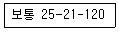
- 보통 중량 골재를 사용한 콘크리트이다.
- 슬럼프의 허용 오차는 ±25mm이어야 한다.
- 굵은 골재의 최대치수가 25mm인 골재를 사용한 콘크리트이다.
- 설계기준 휨강도가 21MPa인 콘크리트이다.
(정답률: 55%)
31. 콘크리트용 재료의 계량에 대한 설명으로 틀린 것은?
- 혼화제를 녹이는데 사용하는 물은 단위수량의 일부로 보아야 한다.
- 실용상으로 15~30분간의 흡수율을 골재유효흡수율로 보아도 좋다.
- 각 재료는 1배치씩 질량으로 계량하여야 하나, 물은 용적으로 계량해도 좋다.
- 계량은 시방배합에 의해 실시하는 것으로 한다.
(정답률: 61%)
32. ø100×200mm 콘크리트 공시체에 축 하중 P=200kN을 가했을 때 세로 방향의 수축량을 구한 값으로 옳은 것은? (단, 콘크리트 탄성계수 Ec=13730N/mm2)
- 0.07mm
- 0.15mm
- 0.37mm
- 0.55mm
(정답률: 38%)
33. 품질관리 7가지 관리기법 중 아래의 표에서 설명하는 것은?
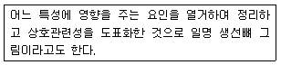
- 특성요인도
- 관리도
- 체크시트
- 산포도
(정답률: 69%)
34. 히스토그램의 특징으로 틀린 것은?
- 층별의 비교가 가능하다.
- 공정능력을 조사할 수 있다.
- 규격 또는 표준치와는 비교가 곤란하다.
- 분포의 모양을 조사할 수 있다.
(정답률: 50%)
35. 콘크리트의 크리프에 영향을 미치는 요인에 대한 설명 중 틀린 것은?
- 재하응력이 클수록 크리프는 크다.
- 물-시멘트비가 작을수록 크리프는 작다.
- 부재치수가 작을수록 크리프는 크다.
- 재하시의 재령이 작을수록 크리프는 작다.
(정답률: 42%)
36. 레디믹스 콘크리트 혼합에 사용되는 물에 대한 설명으로 틀린 것은?
- 상수도 이외의 물이란 하천수, 호숫물, 저수지수, 지하수, 회수수, 공업용수 등 상수돗물을 제외한 모든 물을 말한다.
- 상수돗물은 시험을 하지 않아도 사용할 수 있다.
- 슬러지수란 콘크리트의 회수수에서 상징수를 일부 활용하고 남은 슬러지를 포함한 물을 말한다.
- 상수돗물 이외의 물을 사용한 경우 모르타르 압축강도비는 재령 7일 및 28일에서 90% 이상이어야 한다.
(정답률: 53%)
37. 다음 중 재하시험에 의한 구조물의 성능시험을 실시하여야 하는 경우와 거리가 먼 것은?
- 콘크리트 표면에 미세한 균열이 발생한 경우
- 공사 중에 콘크리트가 동해를 받았을 우려가 있는 경우
- 공사 중 현장에서 취한 콘크리트의 압축강도시험 결과로부터 판단하여 강도에 문제가 있다고 판단되는 경우
- 구조물의 안전에 어떠한 근거 있는 의심이 생긴 경우
(정답률: 57%)
38. 굳지 않은 콘크리트의 워커빌리티 및 반죽질기에 영향을 주는 인자의 설명으로 틀린 것은?
- 단위 수량이 많을수록 콘크리트의 반죽질기가 질게 되어 유동성이 크게 되지만, 단위 수량을 과다하게 증가시키면 재료분리가 발생하기 쉬워지므로 워커빌리티가 좋아진다고 말할 수 없다.
- 일반적인 범위 내에서의 부배합의 콘크리트가 빈배합의 콘크리트에 비해 워커빌리티가 좋다고 할 수 있다.
- 일반적으로 분말도가 높은 시멘트의 경우에는 시멘트 풀의 점성이 높아지므로 반죽질기는 잘게 된다.
- 일반적으로 콘크리트의 비빔온도가 높을수록 반죽질기는 증가하는 경향이 있다.
(정답률: 43%)
39. 콘크리트 압축강도 추정을 위한 반발경도 시험방법에 대한 설명으로 틀린 것은?
- 시험할 콘크리트 부재의 두께가 100mm 이상이어야 하며, 하나의 구조체에 고정되어야 한다.
- 타격 위치는 가장자리로부터 100mm 이상 떨어지고 서로 30mm 이내로 접근해서는 안 된다.
- 측정값 20개의 평균으로부터 오차가 10% 이상이 되는 경우의 값은 버리고 나머지 측정값의 평균을 구하여 채택한다.
- 슈미트 해머는 수평 타격 시험값이 가장 안정된 값을 나타내기 때문에 수평 타격을 원칙으로 한다.
(정답률: 53%)
40. 다음 관리도 중 콘크리트의 압축강도, 슬럼프, 공기량 등의 특성을 관리하는데 주로 사용되는 관리도는?
- p관리도
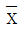
-R관리도- pn-R관리도
- u관리도
(정답률: 66%)
3과목: 콘크리트의 시공
41. 프리플레이스트 콘크리트에 대한 설명으로 틀린 것은?
- 고강도 프리플레이스트 콘크리트라 함은 고성능 감수제에 의하여 주입 모르타르의 물-결합재비를 40% 이하로 낮추어 재령 91일에서 압축강도 40MPa 이상이 얻어지는 프리플레이스트 콘크리트를 말한다.
- 굵은 골재 최소치수란 프리플레이스트 콘크리트에 사용되는 굵은 골재에 있어서 질량이 적어도 90% 이상 남는 체중에서 최소 치수의 체눈의 호칭치수로 나타낸 굵은 골재의 치수를 말한다.
- 프리플레스트 콘크리트란 미리 거푸집속에 특정한 입도를 가지는 굵은 골재를 채워놓고 그 간극에 모르타르를 주입하여 제조한 콘크리트를 말한다.
- 프리플레이스트 콘크리트의 강도는 원칙적으로 재령 28일 또는 재령 91일의 압축강도를 기준으로 한다.
(정답률: 38%)
42. 콘크리트의 타설 작업에 대한 설명으로 틀린 것은?
- 콘크리트를 2층 이상으로 나누어 타설할 경우, 상층의 콘크리트 타설은 원칙적으로 하층의 콘크리트가 굳은 후 레이턴스를 모두 제거하고 타설하여야 한다.
- 타설한 콘크리트를 거푸집 안에서 횡방향으로 이동시켜서는 안된다.
- 한 구획내에 콘크리트는 타설이 완료될때까지 연속해서 타설하여야 한다.
- 콘크리트는 그 표면이 한 구획 내에서는 거의 수평이 되도록 타설하는 것을 원칙으로 한다.
(정답률: 62%)
43. 매스콘크리트에 대한 일반적인 설명으로 틀린 것은?
- 온도균열폭을 제어하기 위해서 온도균열지수 및 철근비를 낮게하는 방법이 좋다.
- 일반적으로 콘크리트의 온도상승량은 단위시멘트량 10kg/m3에 대하여 대략 1℃ 정도의 비율로 증가된다.
- 저발열형 시멘트는 장기 재령의 강도 증진이 보통 포틀랜드 시멘트에 비하여 크므로 91일 정도의 장기 재령을 설계기준압축강도의 기준 재령으로 하는 것이 바람직하다.
- 매스콘크리트의 벽체구조물에 설치하는 수축이음의 단면 감소율은 35% 이상으로 하여야 한다.
(정답률: 44%)
44. 고강도 콘크리트에 사용되는 굵은 골재의 최대치수 기준에 대한 설명으로 옳은 것은?
- 일반적인 경우 25mm 이상의 것을 사용하여야 한다.
- 철근 최소 수평순간격의 3/4 이내의 것을 사용하도록 한다.
- 슬래브 두께의 2/3를 초과하지 않아야 한다.
- 부재 최소치수의 1/2을 초과하지 않아야 한다.
(정답률: 31%)
45. 고압증기양생한 콘크리트의 특징에 대한 설명으로 틀린 것은?
- 황산염에 대한 저항성이 향상된다.
- 용해성의 유리석회가 없기 때문에 백태현상을 감소시킨다.
- 표준온도로 양생한 콘크리트와 비교하여 수축률은 약간 증가하는 경향이 있다.
- 보통양생한 것에 비해 철근의 부착강도가 약 1/2이 된다.
(정답률: 30%)
46. 매스 콘크리트의 타설 온도를 낮추는 방법 중 선행 냉각방법에 해당되지 않는 것은?
- 관로식 냉각
- 혼합전 재료를 냉각
- 혼합중 콘크리트를 냉각
- 타설 전 콘크리트를 냉각
(정답률: 53%)
47. 거푸집 및 동바리 구조 계산에 사용되는 연직하중에 대한 설명으로 틀린 것은?
- 거푸집 하중은 최소 0.4kN/m2 이상을 적용하며, 특수거푸집의 경우에는 그 실제의 중량을 적용하여 설계한다.
- 활하중은 구조물의 수평투영면적당 최소 2.5kN/m2 이상이어야 한다.
- 콘크리트의 단위 중량은 철근의 중량을 포함하여 보통콘크리트인 경우 24kN/m3을 적용하여야 한다.
- 고정 하중은 철근콘크리트 중량만을 고려하여 결정하여야 한다.
(정답률: 56%)
48. 수중 콘크리트의 배합에 대한 설명으로 틀린 것은?
- 일반 수중콘크리트의 슬럼프 시공방법에 따라 50~100mm를 표준으로 한다.
- 일반 수중콘크리트의 물-결합재비는 50% 이하를 표준으로 한다.
- 일반 수중콘크리트는 다짐이 불가능하기 때문에 일반콘크리트와 비교하여 높은 유동성이 필요하다.
- 수중불분리성 콘크리트의 공기량은 4% 이하를 표준으로 한다.
(정답률: 35%)
49. 수중콘크리트의 유동성에 대한 아래 표의 설명에서 ()에 적합한 것은?
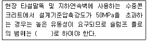
- 100~300mm
- 300~500mm
- 500~700mm
- 700~900mm
(정답률: 62%)
50. 콘크리트 제품 양생법 중 고온 고압용기에 제품을 넣고 1MPa의 고압과 180℃ 전후의 고온으로 처리하는 양생법은?
- 증기양생
- 피막양생
- 전기양생
- 오토클레이브 양생
(정답률: 69%)
51. 다음은 구조물별 시공이음의 위치에 대한 설명이다. 옳지 않은 것은?
- 바닥틀의 시공이음에서 보가 그 경간 중에서 작은 보와 교차할 경우에는 작은 보의 폭의 약 2배 거리만큼 떨어진 곳에 보의 시공이음을 설치한다.
- 아치의 시공이음은 아치축에 직각방향이 되도록 설치한다.
- 바닥틀의 시공이음은 슬래브 또는 보의 경간 단부에 둔다.
- 바닥틀과 일체로 된 기둥 혹은 벽의 시공이음은 바닥틀과의 결계부근에 설치하는 것이 좋다.
(정답률: 54%)
52. 한중 콘크리트에 관한 설명으로 옳지 않은 것은?
- 하루의 평균기론이 4℃ 이하가 되는 기상조건에서는 한중콘크리트로 시공한다.
- 콘크리트를 비비기 할 때 재료를 가열할 경우, 물 또는 골재를 가열하는 것으로 하며, 시멘트는 어떠한 경우라도 직접 가열할 수 없다.
- 가열할 재료를 믹서에 투입할 때 가열한 물과 굵은 골재, 다음에 잔골재를 넣어서 믹서 안의 재료온도가 40℃ 이하가 된 후 최후에 시멘트를 넣는 것이 좋다.
- 추위가 심한 경우 또는 부재 두께가 얇은 경우 소요의 압축강도가 얻어질 때까지 콘크리트의 양생온도는 0℃ 이상을 유지하여야 한다.
(정답률: 56%)
53. 방사선 차폐용 콘크리트에 대한 설명으로 틀린 것은?
- 차폐용 콘크리트로서 필요한 성능인 밀도, 압축강도, 설계허용온도, 결합수량, 붕소량 등을 확보하여야 한다.
- 시공 시 설계에 정해져 있지 않은 이음은 설치할 수 없다.
- 콘크리트의 슬럼프는 작업에 알맞은 범위내에서 가능한 한 적은 값이어야 하며, 일반적인 경우 150mm 이하로 하여야 한다.
- 물-결합재비는 55% 이하를 원칙으로 하고, 혼화재료는 가급적 사용하지 않아야 한다.
(정답률: 64%)
54. 콘크리트용 내부 진동기의 사용방법에 관한 설명으로 틀린 것은?
- 진동다지기를 할 때에는 내부진동기를 하층콘크리트 속으로 0.1m 정도 찔러 넣는다.
- 재진동을 할 경우에는 초결이 일어난 것을 확인한 후 실시한다.
- 1개소당 진동시간은 다짐할 때 시멘트 페이스트가 표면 상부로 약간 부상하기 까지 한다.
- 내부진동기는 연직으로 찔러 넣으며, 삽입간격은 일반적으로 0.5 이하로 하는 것이 좋다.
(정답률: 71%)
55. 거푸집판에 접하지 않은 면의 표면마무리 시공에 대한 설명으로 틀린 것은?
- 다지기를 끝내고 거의 소정의 높이와 형상으로 된 콘크리트의 윗면은 스며올라온 물이 없어진 후나 물을 처리한 후가 아니면 마무리해서는 안된다.
- 마무리에는 나무흙손이나 적절한 마무리기계를 사용하여야 하고, 마무리 작업은 과도하게 되지 않도록 한다.
- 매끄럽고 치밀한 표면이 필요할 때는 작업을 되도록 빠른 시기에 나무흙손으로 가볍게 콘크리트 윗면을 마무리하여야 한다.
- 마무리 작업 후 콘크리트가 굳기 시작할 때까지의 사이에 일어나는 균열은 다짐 또는 재마무리에 의해서 제거하여야 한다. 필요에 따라 재진동을 해도 좋다.
(정답률: 50%)
56. 아래의 표에서 설명하는 것은?
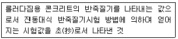
- RI 시험값
- VC값
- 다짐계수 값
- 슬럼프 값
(정답률: 65%)
57. 섬유보강 콘크리트의 배합 및 비비기에 대한 설명으로 틀린 것은?
- 감성유보강 콘크리트의 경우, 소요 단위수량은 강섬유의 혼입률에 거의 비례하여 증가한다.
- 믹서는 가경식 믹서를 사용하는 것을 원칙으로 한다.
- 배합을 정할 때에는 일반 콘크리트의 배합을 정할 때의 고려사항과 콘크리트의 휨강도 및 인성이 소요의 값으로 되도록 고려할 필요가 있다.
- 믹서에 투입된 섬유의 분산에 필요한 비비기 시간은 섬유의 종류나 혼입률에 따라 다르다.
(정답률: 65%)
58. 고강도콘크리트에 관한 설명으로 틀린 것은?
- 콘크리트를 타설 후 경화할 때까지 직사광선이나 바람에 의해 수분이 증발하지 않도록 하여야 한다.
- 콘크리트의 운반시간 및 거리가 긴 경우에 사용하는 운반차는 트럭믹서, 트럭애지테이터 혹은 건비빔 믹서로 하여야 한다.
- 단위수량을 줄이고 워커빌리티의 개선을 위하여 AE제를 사용하는 것을 원칙으로 한다.
- 잔골재율은 소요의 워커빌리티를 얻도록 시험에 의하여 결정하여야 하며, 가능한 적게 하도록 한다.
(정답률: 45%)
59. 팽창콘크리트의 팽창률은 일반적으로 재령 며칠에 대한 시험값을 기준으로 하는가?
- 3일
- 7일
- 28일
- 90일
(정답률: 60%)
60. 콘크리트를 타설할 때 다짐작업 없이 자중만으로 철근 등을 통과하여 거푸집의 구석구석까지 균질하게 채워지는 정도를 나타내는 굳지 않은 콘크리트의 성질을 무엇이라고 하는가?
- 유동성
- 고유동성
- 슬럼프 플로
- 자기 충전성
(정답률: 55%)
4과목: 구조 및 유지관리
61. 슬래브 두께가 100mm이고, 양쪽의 슬래브의 중심 간 거리가 2.5m, 보의 경간이 6.5m인 대칭 T형보가 있다. 유효깊이가 500mm, 복부폭이 300mm일 때, 플랜지의 유효폭은 얼마인가?
- 1900mm
- 2500mm
- 800mm
- 1625mm
(정답률: 29%)
62. 균열보수공법 중에서 저압ㆍ지속식 주입공법에 대한 설명으로 틀린 것은?
- 저압이므로 실(seal)부 파손이 작고 정확성이 높아 시공관리가 용이하다.
- 주입기에 여분의 주입재료가 남아 있으므로 재료 손실이 크다.
- 주입되는 수지는 동심원상으로 확산되므로 주입압력에 의한 균열이나 들뜸이 확대되지 않는다.
- 주입재는 에폭시 수지 이외에는 사용할 수 없어서 습윤부에 사용이 불가능하다.
(정답률: 53%)
63. 콘크리트 구조물의 표면에 나타나는 열화 등을 조사하는 방법 중에서 눈으로 직접하는 외관조사 항목이 아닌 것은?
- 균열의 발생위치와 규모
- 철근 노출조사
- 정적처짐측정
- 구조물 전체의 침하 등의 변형상황
(정답률: 61%)
64. 프리스트레스트 콘크리트에서 프리스트레스의 손실에 대한 설명 중 틀린 것은?
- 마찰에 의한 손실은 포스트텐션에서 고려된다.
- 포스트텐션에서는 탄성손실을 극소화시킬 수 있다.
- 일반적으로 프리텐션이 포스트텐션보다 손실이 크다.
- 릴렉세이션에 의한 손실은 즉시 손실이다.
(정답률: 51%)
65. 보수재료를 선정할 때 고려하여야 하는 사항에 대한 설명으로 틀린 것은?
- 기존 콘크리트구조물과 확실하게 일체화 시키기 위해서는 경화시나 경화 후에 수축을 일으키지 않는 재료가 필요하다.
- 기존 콘크리트와 가능한 한 열팽창계수가 비슷한 재료를 사용해야 한다.
- 노출 철근을 보수하는 경우 비전도성 재료로 수복하는 것이 바람직하다.
- 기존 콘크리트와 유사한 탄성계수를 갖는 재료를 선정할 필요가 있다.
(정답률: 44%)
66. 장주의 좌굴하중(Pcr)을 구하는 식이 아래의 표와 같을 때 다음 중 n값이 가장 큰 지점조건은?
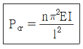
- 1단 고정, 타단 자유인 장주
- 양단 힌지인 장주
- 1단 고정, 타단 한지인 장주
- 양단 고정인 장주
(정답률: 43%)
67. 다음 식 중 콘크리트 구조물의 탄산화깊이를 예측할 때 일반적으로 적용되고 있는 식은? (단, X를 탄산화깊이, A를 탄산화 속도계수, t를 경과년수라 한다.)
- X=A√t
- X=At3
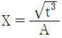
- X=At2
(정답률: 59%)
68. 철근콘크리트 교량의 슬래브에 균열이 발생하였을 때 적용할 수 있는 보수ㆍ보강방법으로 거리가 먼 것은?
- 강판접착공법
- 수지주입공법
- 연속섬유시트감기공법
- FRP 접착공법
(정답률: 50%)
69. 콘크리트 비파괴시험 방법 중 전자파 레이더법에 대한 설명으로 틀린 것은?
- 부재 두께를 조사할 수 있다.
- 철근부식의 상태를 조사할 수 있다.
- 철근위치를 조사할 수 있다.
- 골재노출*(충전 불량)의 결함부를 파악할 수 있다.
(정답률: 63%)
70. 아래 그림과 같이 인장철근이 1열로 배근된 단철근 직사각형 보에서 휨에 의한 강도감소계수(ø)를 구하면? (단, fck=28MPa, fy=400MPa, As=4500mm2)
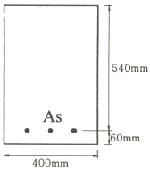
- 0.802
- 0.821
- 0.831
- 0.842
(정답률: 13%)
71. 전자파 레이더법에서 반사물체까지의 거리(D)를 구하는 식으로 옳은 것은? (단, V는 콘크리트내의 전자파속도, T는 입사파와 반사파의 왕복전파시간)
- D=VT/2
- D=VT/√2
- D=VT/3
- D=VT/√3
(정답률: 42%)
72. 폭은 300mm, 유효깊이는 500mm, As는 1700mm2, fck는 24MPam, fy는 350MPa인 단철근 직사각형 보가 있다. 균형철근비는 얼마인가?
- 0.0313
- 0.0331
- 0.0352
- 0.0374
(정답률: 28%)
73. 강도설계법의 규정에 의해 최소 전단철근량을 사용하여야 할 경우, 계수 하중에 의한 전단력 Vu=73kN을 받을 수 있는 직사각형 단면 보의 최소면적(폭×유효깊이)은 얼마인가? (단, fck=21MPa이다.)
- 107500mm2
- 127500mm2
- 147500mm2
- 167500mm2
(정답률: 30%)
74. 경간이 8m인 캔틸레버 철근콘크리트 보에서 처짐을 계산하지 않는 경우의 최소 두께(h)는? (단, 보통중량콘크리트를 사용하고, 사용철근의 fy=350MPa이다.)
- 395mm
- 465mm
- 790mm
- 930mm
(정답률: 18%)
75. 콘크리트의 경화 전 균열에 대한 설명으로 틀린 것은?
- 철근, 입자가 큰 골재 등이 콘크리트의 침하를 국부적으로 방해하여 침하수축균열이 발생할 수 있다.
- 단위수량을 적게 하고 슬럼프가 큰 콘크리트를 사용하여 침하수축균열을 방지할 수 있다.
- 콘크리트 표면에서 물의 증발속도가 블리딩 속도보다 빠른 경우 플라스틱 수축균열이 발생할 수 있다.
- 표면의 수분 증발을 방지하고, 필요 마무리 작업을 최소화함으로써 플라스틱 수축균열을 방지할 수 있다.
(정답률: 51%)
76. 콘크리트의 동해에 대한 설명으로 틀린 것은?
- 콘크리트의 품질이 나빠도 환경이 온화하거나 물의 공급이 없으면 동해의 정도는 적다.
- 기포간격계수가 클수록 동해의 위험성이 발생하기 쉽다.
- 골재의 품질이 나쁜 경우에 팝아웃 현상이 발생하기 쉽다.
- 콘크리트내 수분이 결빙점 이상과 이하를 반복하여 발생한다.
(정답률: 38%)
77. 알칼리골재반응은 콘크리트 내부에 국부적인 팽창압력을 발생시켜 구조물에 균열을 발생시킬 수 있다. 이러한 알칼리골재반응의 대부분을 차지하는 반응은 다음 중 어느 것인가?
- 알칼리-탄산염반응
- 알칼리-실리카반응
- 알칼리-실리케이트반응
- 알칼리-황산염반응
(정답률: 62%)
78. 직접설계법에 의한 2반향 슬래브 설계 시 내부 경간에서 정계수휨모멘트는 전체 정적계수휨모멘트의 몇 %의 비율로 분배하여야 하는가?
- 25%
- 30%
- 35%
- 40%
(정답률: 37%)
79. 옹벽의 안정에 대한 설명으로 틀린 것은?
- 전도에 대한 저항휨모멘트는 횡토압에 의한 전도모멘트의 1.5배 이상이어야 한다.
- 활동에 대한 저항력은 옹벽에 작용하는 수평력의 1.5배 이상이어야 한다.
- 전도 및 지반지지력에 대한 안정조건은 만족하지만, 활동에 대한 안정조건만을 만족하지 못할 경우에는 활동방지벽 혹은 횡방향 앵커 등을 설치하여 활동저항력을 증대시킬 수 있다.
- 지반에 유발되는 최대 지반반력이 지반의 허용지지력을 초과하지 않아야 한다.
(정답률: 37%)
80. 인장이형철근의 정착길이는 기본정착길이(ldb)에 보정계수를 적용하여 구할 수 있다. 다음 중 아래 표의 경우에 적용하는 보정계수(α)의 값으로 옳은 것은?
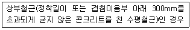
- 1.0
- 1.2
- 1.3
- 1.5
(정답률: 38%)